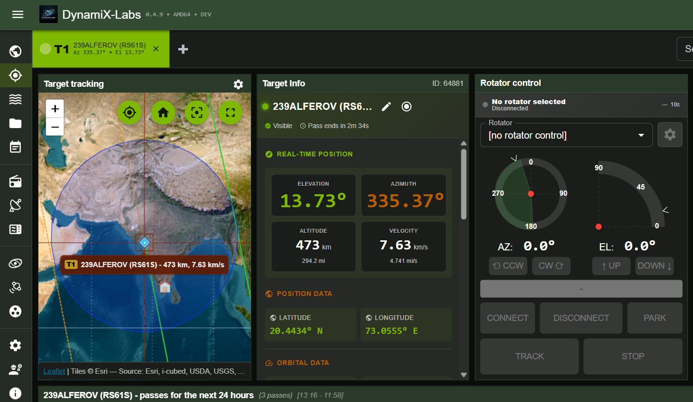
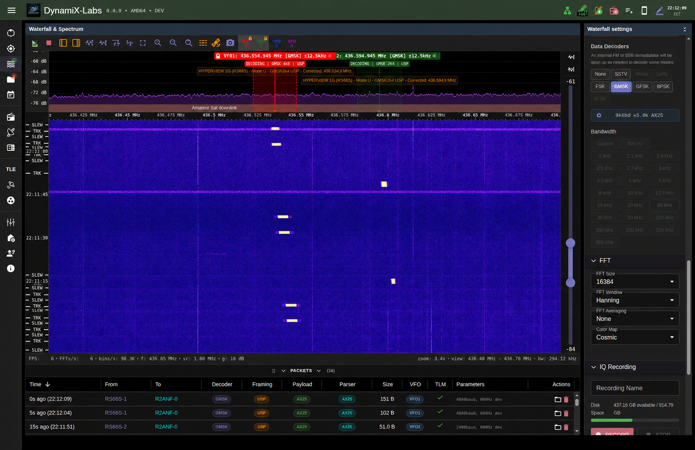
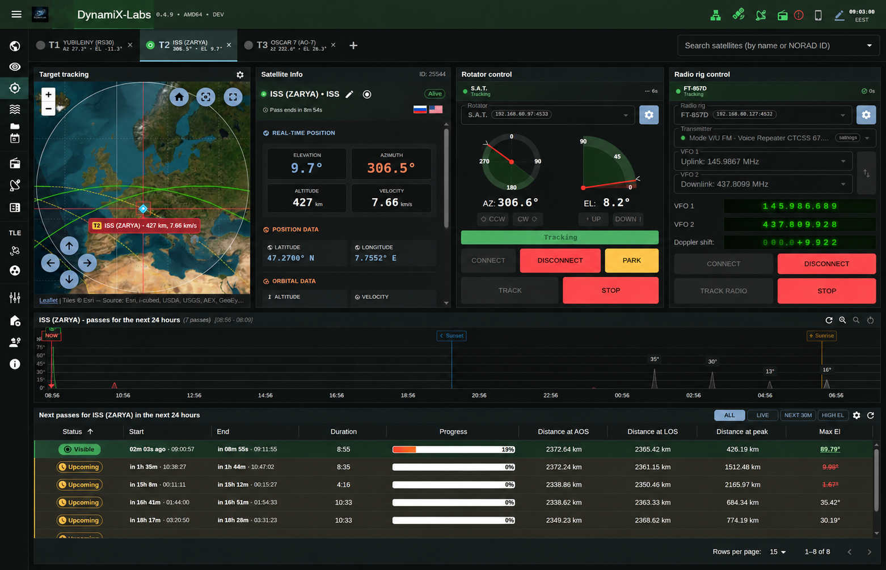
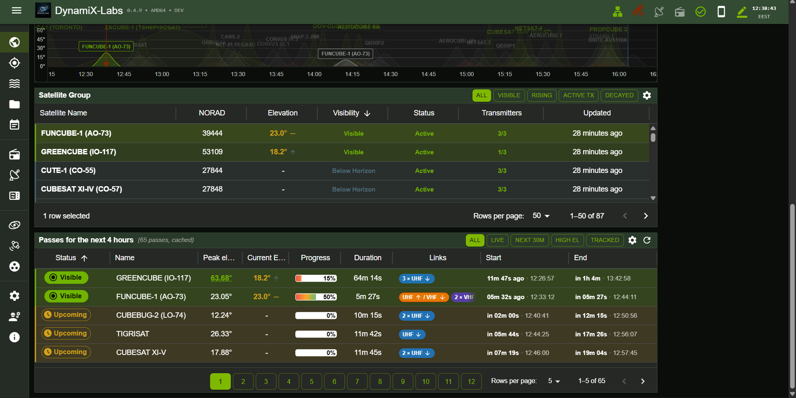

Active
Ground Station Suite
End-to-end ground station software for autonomous satellite tracking, real-time DSP, and telemetry decoding. This is our flagship repo — a complete multi-layer ecosystem running from SDR hardware to a React dashboard.
- Multi-target tracking with SGP4 orbital propagation & TLE auto-update
- Automated Az/El antenna rotator control via Hamlib
- Live waterfall spectrum display with configurable FFT engine
- Multi-VFO baseband demodulation — FM, SSB, AM, GMSK, BPSK
- AX.25/CSP/CCSDS frame synchronizer & telemetry parser
- IQ recording & playback in SigMF format
- Scheduled automated observations with multi-SDR support
- Full duplex TX/RX with self-interference cancellation
- AI-powered audio transcription (Gemini Live / Deepgram)
- React + Material-UI responsive dashboard via WebSockets
Python
FastAPI
React
Socket.IO
Leaflet
SoapySDR
SQLAlchemy
Docker